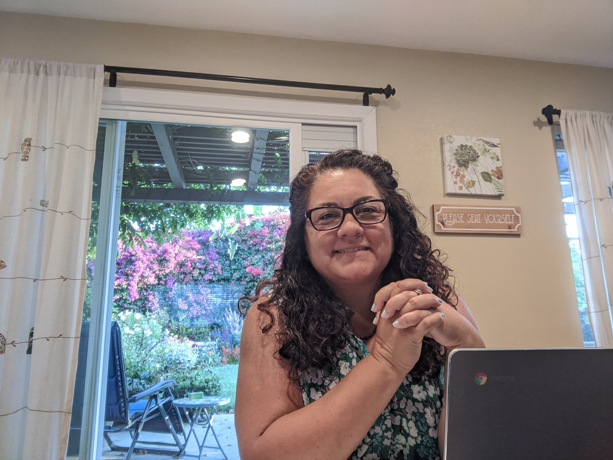
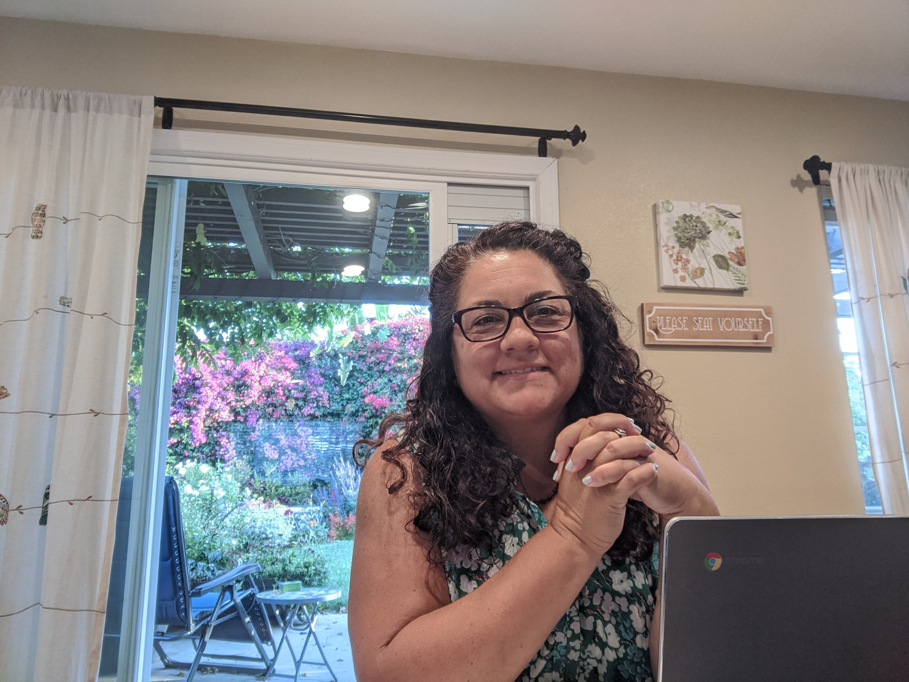

LaDonna is a 3rd generation Venturan and attended schools in Ventura Unified School District. She has worked with junior high and high school students for over 25 years and she loves her job as a teacher.
She has taught many different subjects: English, Earth Science, Biology and most recently AVID. Her goals are to be a life-long learner and a support for those who also want to learn. It was through her time as an AVID teacher that she discovered the best way to help someone who is struggling with their learning. That is to ask them questions! By helping her students understand where and why they are confused, the student can help themselves. She understands they many different questioning methods that will guide her students to their answers. SHE WILL NEVER JUST GIVE THEM THE SOLUTION. Together, LaDonna and her students work through the problem and develop the skills necessary to point to the confusion and then come up with a solution. Her work is very rewarding and she states that the best part of her job is watching her student have their "Ah Ha Moment."
She lives in Ventura with her husband (who is also a high school teacher) and their daughter. Give her a call and she'd love to discuss how she can support your student and family. 805-231-7684
.png) 
